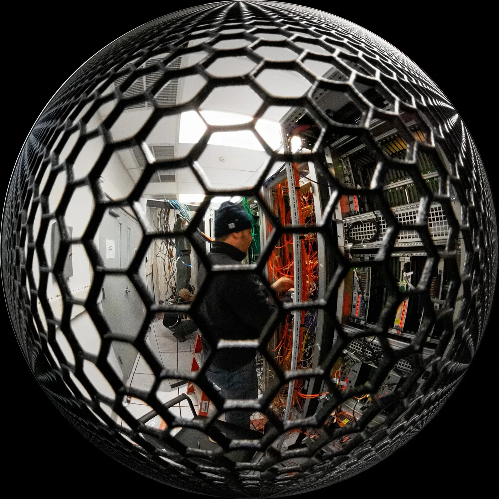
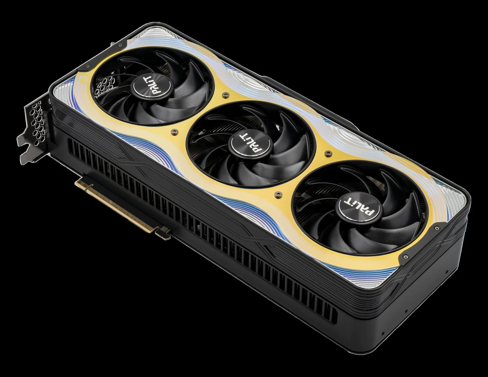

The query did not change. The engine underneath it did.
On November 23, NVIDIA and DuckLabs released Sirius as a core extension for DuckDB, the analytical database that runs inside a process rather than on a server. Two SQL commands install and load the extension. From that moment, supported analytical queries execute on an NVIDIA graphics processor instead of the central processor, while the SQL text, the schemas and the connection stay exactly as written.
Sirius is an open-source, GPU-native SQL engine developed through a collaboration between the University of Wisconsin–Madison and NVIDIA. DuckDB keeps the front of the house: parsing the SQL, optimizing the plan, returning the results. Sirius takes the plan and runs it where the parallelism lives. A query whose features fall outside the supported set does not fail; the engine hands the query back to DuckDB on the CPU, and the application receives an answer through the same connection either way.
01 · The announcement
The release arrives as part of DuckDB 2.0, and the requirements stay narrow: a file-backed DuckDB database, an NVIDIA GPU with a compatible driver, and a download of roughly 700 megabytes that selects the CUDA backend matching the driver on the machine. The walkthrough NVIDIA published builds a small TPC-H dataset, persists the tables with a checkpoint so Sirius can read the native DuckDB format, and then runs an ordinary grouped aggregation over the lineitem table. The example is deliberately small; NVIDIA states plainly that the sample illustrates the workflow and demonstrates no performance advantage at that size.

02 · Why it matters
Analytical questions are the waiting room of data work. Exploration stalls while a scan runs; a pipeline finishes late; a dashboard answers at the speed of the slowest query behind it. The usual remedies carry a rewrite: move the data into a separate warehouse, translate the SQL into a GPU programming interface, or accept a new tool in the chain and maintain the seam forever. Sirius removes the rewrite from the decision. The interface the team already trusts stays in place, and the acceleration arrives underneath it, one extension load at a time.
That shape matters beyond databases. Context engineering at Ovia since December 2022 rests on the same discipline: hold the surface that people and systems depend on steady, and improve the machinery behind the surface where measurement can prove the gain. A stable interface is not conservatism. The stable interface is what makes a faster engine safe to try, because the comparison stays honest, same question, same data, same result shape, two engines.
Hold the surface steady, and improve the machinery behind the surface where measurement can prove the gain.
03 · The craft angle: keep the question, change the engine
The benchmark NVIDIA published is a cold-run comparison, and the details deserve the same care as the headline. Queries derived from the TPC-H benchmark ran at scale factors from 100 gigabytes to 10 terabytes, with data stored in Amazon S3, under default and tuned settings, on pinned development builds. With tuned settings, two GPUs delivered the 3.25 to 5.50 times speedups over the best tested CPU configurations. At the one-terabyte scale, total runtime fell from 347.3 seconds to 63.2 seconds. At three terabytes, runtime fell from 752.4 seconds to 160.6 seconds, with query-time compute cost lower by approximately 71 percent. At ten terabytes, the tuned two-GPU run finished in 729.9 seconds against 2,369.4 seconds on CPU, a 3.25 times speedup and approximately 79 percent lower query-time compute cost. Every figure in this section is NVIDIA-reported.

Two craft lessons travel with the numbers. First, scale changes the right configuration: at the smallest scale tested, one GPU carried the lowest cost while two GPUs carried the shortest runtime, and at the largest scale the tuned two-GPU setup won on both measures. Second, tuning is part of the result, not a footnote: at ten terabytes, the default two-GPU configuration did not finish, while the tuned configuration completed the workload. An engine swap that cannot state its settings has not yet earned a production slot.
04 · Caveats and fine print
The fine print is specific, and the article keeps the whole of it in view. Sirius timings exclude result fetch and export, while the CPU timings include CSV output, so the comparison is close but not perfectly symmetrical. Query-time compute costs cover measured instance runtime and exclude startup, validation, storage, S3 transfer and idle time. The tests used pinned development builds rather than a retail release. Support is partial by design: queries with unsupported features fall back to the CPU engine, which protects correctness and also means a workload gains only where the supported set reaches. Results vary with query structure, dataset size, hardware and cache conditions, as NVIDIA notes in the release itself.
05 · What to watch
Watch the supported set. Every operator and function Sirius learns widens the share of a real workload that runs on the GPU, and the fallback boundary is where adoption will be decided. Watch the benchmark runner as well: the repository publishes the runner, the query definitions, the configuration notes and the setup steps, so the honest next move for any team is a local rerun on local data before any claim travels further. And watch where the pattern repeats, an established interface, a new engine underneath, a published way to check the difference. That pattern is how infrastructure improves without breaking the work built on top of it.
We run data work the way the Studio and the Lab run every engagement: the question stays legible, the engine earns its place under measurement, and the result returns through the surface the team already knows. Same SQL. New engine. Proof before adoption.
References
- NVIDIA Technical Blog — “Get Started with GPU-Accelerated DuckDB Analytics Using the Sirius Core Extension”, November 23, 2026: https://developer.nvidia.com/blog/get-started-with-gpu-accelerated-duckdb-analytics-using-the-sirius-core-extension/
- DuckDB — “Announcing DuckDB 2.0.1 LTS”, November 20, 2026: https://duckdb.org/2026/11/20/announcing-duckdb-201
- Sirius project — benchmark runner, query definitions and configuration, GitHub repository: https://github.com/sirius-db/sirius
- Photographs: server racks at the NOIRLab Headquarters Computer Server Room in Tucson, Arizona — NOIRLab/NSF/AURA/T. Slovinský, Creative Commons Attribution 4.0, via Wikimedia Commons: https://commons.wikimedia.org/wiki/File:NOIRLab_HQ_Server_Racks_(6V6A0404-CC).jpg
- Photographs: top view of a server rack in the CERN Computer Centre — Marián Hubinský, Creative Commons Attribution-Share Alike 4.0, via Wikimedia Commons: https://commons.wikimedia.org/wiki/File:Rack_of_Worldwide_LHC_Computing_Grid.jpg
- Photographs: data centre at the Gemini South telescope in Chile, fisheye view — International Gemini Observatory/NOIRLab/NSF/AURA/Manuel Paredes, Creative Commons Attribution 4.0, via Wikimedia Commons: https://commons.wikimedia.org/wiki/File:Data_Center_Fish_Eye_View_(noirlab-racks-155).jpg
- Photographs: Palit GeForce RTX 5090 GameRock graphics card photographed from above — PantheraLeo1359531, Creative Commons Attribution 4.0, via Wikimedia Commons: https://commons.wikimedia.org/wiki/File:Palit_GeForce_RTX_5090_Gamerock_20250530_HOF4032.png
.jpg){kind=link}

.jpg){kind=link}